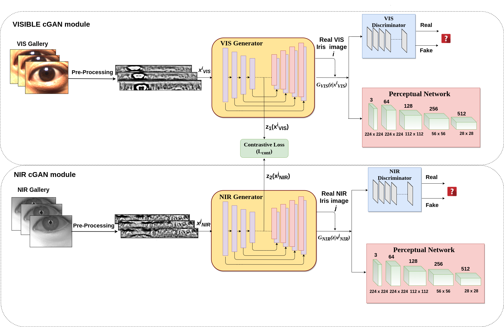

Publications
Pose Attention-Guided Profile-to-Frontal Face Recognition
July 2022 INTERNATIONAL JOINT CONFERENCE ON BIOMETRICS IJCB
Deep GAN-Based Cross-Spectral Cross-Resolution Iris Recogntion
June 2021 IEEE TRANSACTIONS ON BIOMETRICS, BEHAVIOR, AND IDENTITY SCIENCE TBIOM

Cross-Spectral Iris Matching Using Conditional Coupled GAN
2020 INTERNATIONAL JOINT CONFERENCE ON BIOMETRICS IJCB
Joint-SRVDNet: Joint Super Resolution and Vehicle Detection Network
2020 Institute of Electrical and Electronics Engineers Access Journal IEEE Access
Super resolution-assisted deep aerial vehicle detection
International Society for Optics and Photonics 2019

A joint cross-modal super-resolution approach for vehicle detection in aerial imagery
International Society for Optics and Photonics 2020
Services
Journal reviewer: IEEE Access
Reviewer in Scientific Reports, The Springer Natural